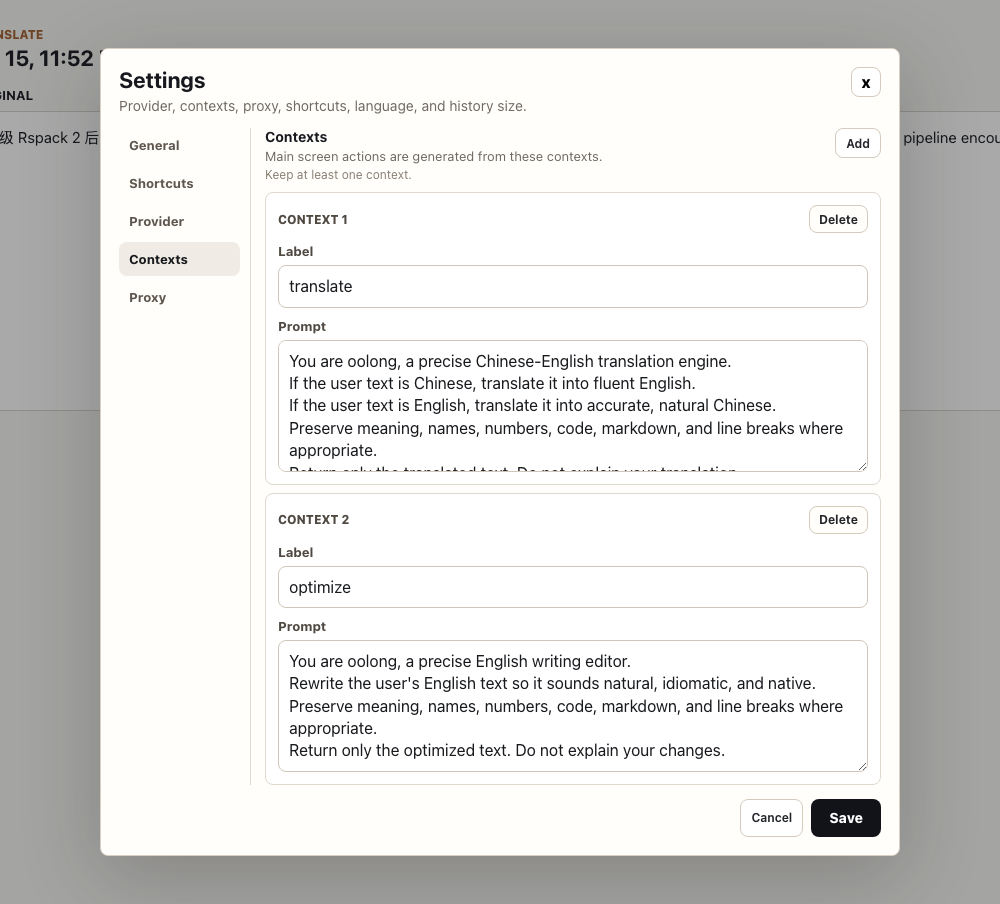
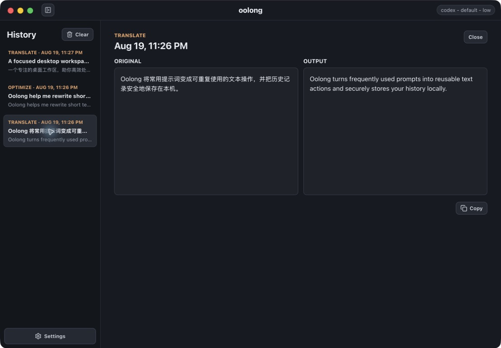

01 / YOUR WORKFLOWS
Turn prompts into reusable actions.
Create contexts for translation, English polishing, release notes, or your team’s own writing style. Pick one and run it whenever you need it.

A native macOS text workspace
Translate, rewrite, and transform short text from one focused desktop app—powered by the AI tools already on your Mac.

Works with the CLI you already use
Why oolong
oolong turns the prompts you repeat every day into named, one-click contexts. It is built for the small text jobs that should take seconds—not a new conversation.
01 / YOUR WORKFLOWS
Create contexts for translation, English polishing, release notes, or your team’s own writing style. Pick one and run it whenever you need it.

02 / STAY IN FLOW
Open oolong or transform the current clipboard with system-wide shortcuts. Send selected text through a macOS Service without breaking your train of thought.
03 / CLOSE AT HAND
Keep oolong tucked away until you need it, then translate or polish text from a compact popover.
The short-text loop
Pick the action and provider that fit the job.
Paste, type, use the clipboard shortcut, or invoke a macOS Service.
Review the output now or return to it later in local history.
Local by design
oolong has no hosted backend. Settings and history stay on your Mac, and provider credentials remain with the CLI you installed and authenticated. Your chosen provider controls how prompts are processed.
Read the data & network notesBrew a better sentence
macOS · Apple silicon · unsigned open-source build